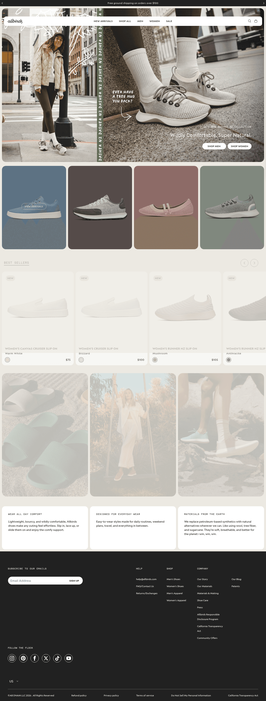
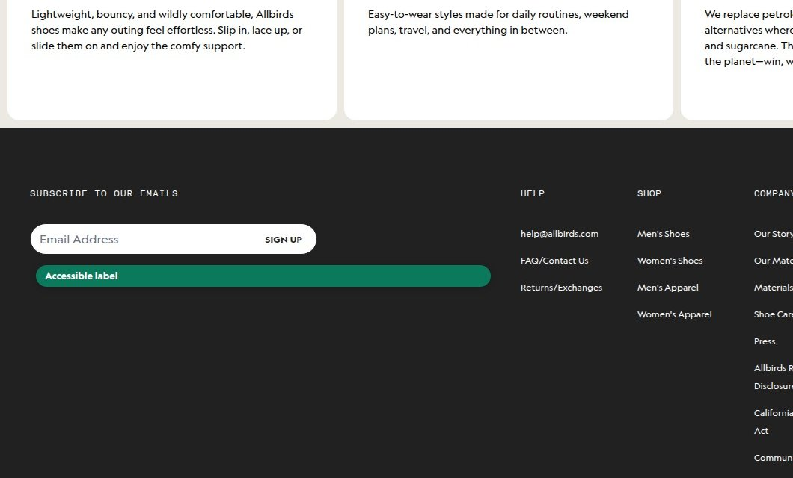
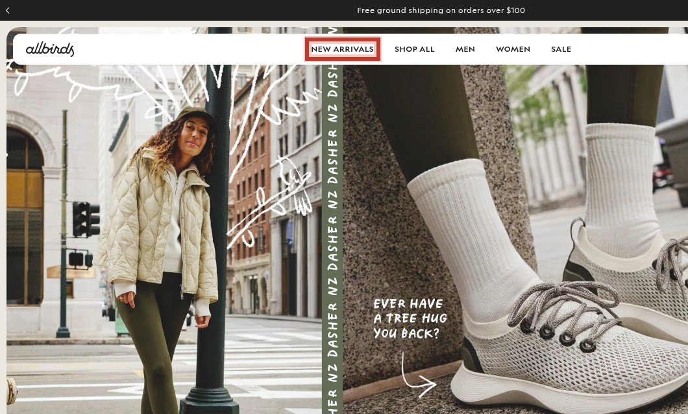
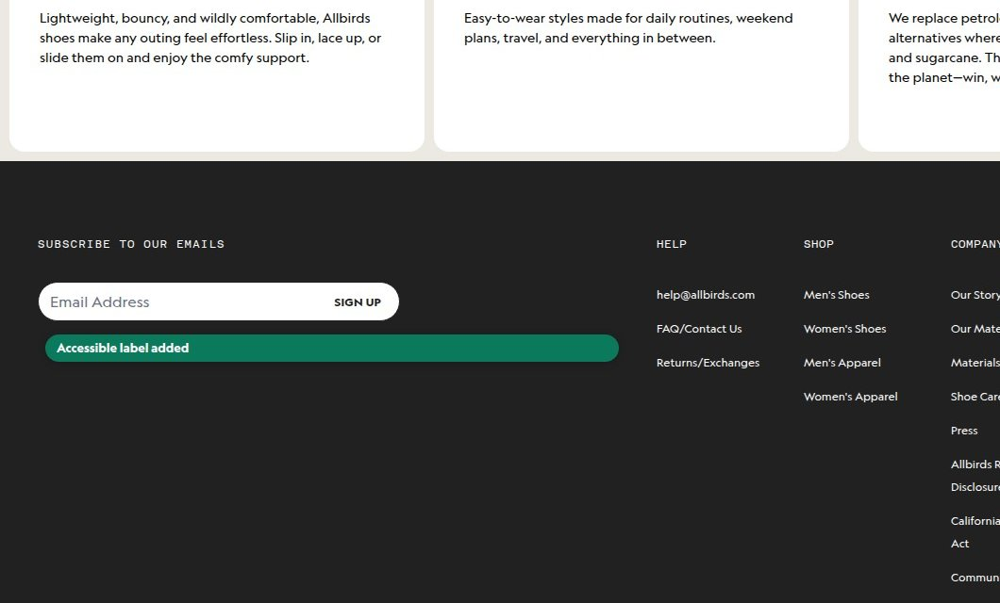
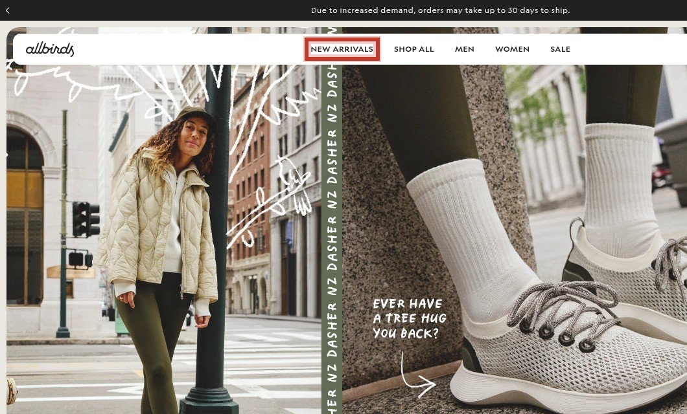
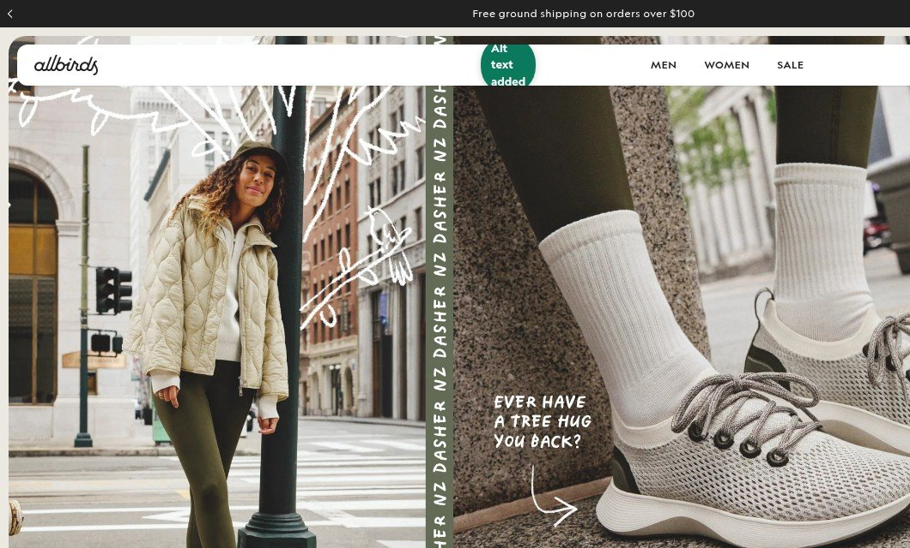

Before & After — click any card for evidence, math and the dev spec

1
High
Heavy script load
Homepage loads 63 scripts, likely slowing interaction readiness and hurting conversion.
HighMedium effortMeasured
Full analysis →

Performance
Homepage
Optimized script load
- Audit third-party tags
- Defer non-critical scripts
- Remove duplicated pixels
✓ Faster mobileDeferred non-critical scripts, removed duplicates.
2
High
Heavy third-party script load
The homepage loads 63 scripts, which is the usual root cause of slow interaction readiness on mobile.
HighMedium effortMeasured
Full analysis →


3
Urgent
Unlabelled controls
41 of 79 buttons have no accessible name, making them unusable for assistive technology users.
UrgentLow effortMeasured
Full analysis →


4
Medium
Missing alt text
3 images lack alt text, losing assistive tech support and image-search traffic.
MediumLow effortMeasured
Full analysis →


5
High
Controls without accessible names
41 of 79 buttons expose no text label, so screen readers and voice control cannot address them and the control is unusable.
HighLow effortMeasured
Full analysis →


6
Medium
Images missing alternative text
3 of 43 images carry no alt attribute, losing both assistive technology support and the image-search traffic the alt text earns.
MediumLow effortMeasured
Full analysis →